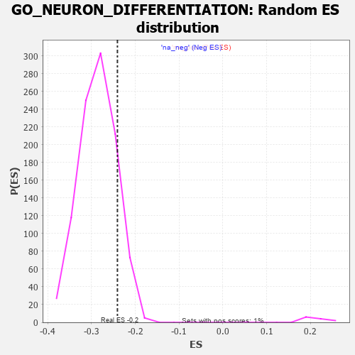

| | | Dataset | 7d |
| Phenotype | NoPhenotypeAvailable |
| Upregulated in class | na_neg |
| GeneSet | GO_NEURON_DIFFERENTIATION |
| Enrichment Score (ES) | -0.24084543 |
| Normalized Enrichment Score (NES) | -0.8417949 |
| Nominal p-value | 0.8684211 |
| FDR q-value | 0.9838388 |
| FWER p-Value | 1.0 |
Table: GSEA Results Summary
 Fig 1: Enrichment plot: GO_NEURON_DIFFERENTIATION
Fig 1: Enrichment plot: GO_NEURON_DIFFERENTIATION
Profile of the Running ES Score & Positions of GeneSet Members on the Rank Ordered List
| PROBE | GENE SYMBOL | GENE_TITLE | RANK IN GENE LIST | RANK METRIC SCORE | RUNNING ES | CORE ENRICHMENT | | 1 | SYT2 | | | 8 | 5.577 | 0.0340 | No |
| 2 | DCLK1 | | | 55 | 2.532 | 0.0439 | No |
| 3 | RAC2 | | | 60 | 2.442 | 0.0587 | No |
| 4 | DISP3 | | | 110 | 1.525 | 0.0619 | No |
| 5 | EMX2 | | | 117 | 1.451 | 0.0702 | No |
| 6 | OLIG3 | | | 149 | 1.268 | 0.0741 | No |
| 7 | RORB | | | 189 | 1.097 | 0.0759 | No |
| 8 | NCAM2 | | | 191 | 1.085 | 0.0826 | No |
| 9 | WNT16 | | | 198 | 1.072 | 0.0885 | No |
| 10 | RHOH | | | 228 | 0.987 | 0.0910 | No |
| 11 | INSM1 | | | 250 | 0.939 | 0.0941 | No |
| 12 | LBX1 | | | 254 | 0.929 | 0.0995 | No |
| 13 | TBX20 | | | 267 | 0.880 | 0.1035 | No |
| 14 | ULK1 | | | 272 | 0.875 | 0.1085 | No |
| 15 | HGF | | | 276 | 0.870 | 0.1136 | No |
| 16 | SHOX2 | | | 288 | 0.842 | 0.1174 | No |
| 17 | ARX | | | 322 | 0.782 | 0.1180 | No |
| 18 | DLL1 | | | 337 | 0.760 | 0.1209 | No |
| 19 | CLN5 | | | 346 | 0.751 | 0.1246 | No |
| 20 | GSK3A | | | 351 | 0.745 | 0.1288 | No |
| 21 | LGR6 | | | 360 | 0.738 | 0.1324 | No |
| 22 | RRN3 | | | 438 | 0.667 | 0.1265 | No |
| 23 | SUFU | | | 443 | 0.665 | 0.1301 | No |
| 24 | LRP1 | | | 470 | 0.648 | 0.1308 | No |
| 25 | CDC20 | | | 480 | 0.644 | 0.1337 | No |
| 26 | HTRA2 | | | 527 | 0.621 | 0.1316 | No |
| 27 | DOK6 | | | 536 | 0.616 | 0.1344 | No |
| 28 | SRF | | | 542 | 0.615 | 0.1376 | No |
| 29 | DDX56 | | | 584 | 0.600 | 0.1360 | No |
| 30 | RAPH1 | | | 592 | 0.597 | 0.1388 | No |
| 31 | PITX3 | | | 594 | 0.596 | 0.1425 | No |
| 32 | FBXW8 | | | 601 | 0.594 | 0.1454 | No |
| 33 | HES5 | | | 661 | 0.571 | 0.1413 | No |
| 34 | ID1 | | | 719 | 0.555 | 0.1373 | No |
| 35 | RERE | | | 787 | 0.536 | 0.1319 | No |
| 36 | HDAC5 | | | 900 | 0.506 | 0.1205 | No |
| 37 | SF3A2 | | | 928 | 0.500 | 0.1201 | No |
| 38 | ZPR1 | | | 967 | 0.491 | 0.1182 | No |
| 39 | DVL3 | | | 971 | 0.490 | 0.1209 | No |
| 40 | AKT1 | | | 1040 | 0.476 | 0.1150 | No |
| 41 | MEF2C | | | 1054 | 0.473 | 0.1162 | No |
| 42 | FZD10 | | | 1065 | 0.470 | 0.1179 | No |
| 43 | SRC | | | 1128 | 0.459 | 0.1127 | No |
| 44 | NCK2 | | | 1131 | 0.458 | 0.1153 | No |
| 45 | EMX1 | | | 1143 | 0.455 | 0.1167 | No |
| 46 | GAB1 | | | 1158 | 0.453 | 0.1177 | No |
| 47 | ERCC3 | | | 1173 | 0.451 | 0.1187 | No |
| 48 | WDR36 | | | 1260 | 0.437 | 0.1102 | No |
| 49 | TBCD | | | 1338 | 0.422 | 0.1028 | No |
| 50 | DRGX | | | 1378 | 0.414 | 0.1003 | No |
| 51 | FKBP4 | | | 1390 | 0.412 | 0.1015 | No |
| 52 | DOCK7 | | | 1398 | 0.410 | 0.1031 | No |
| 53 | CARM1 | | | 1413 | 0.408 | 0.1039 | No |
| 54 | TIMP2 | | | 1478 | 0.394 | 0.0980 | No |
| 55 | IFRD1 | | | 1486 | 0.392 | 0.0995 | No |
| 56 | SOS1 | | | 1547 | 0.384 | 0.0941 | No |
| 57 | CNTN4 | | | 1571 | 0.379 | 0.0935 | No |
| 58 | FZD1 | | | 1574 | 0.379 | 0.0956 | No |
| 59 | RNF6 | | | 1605 | 0.373 | 0.0940 | No |
| 60 | ESRP1 | | | 1653 | 0.364 | 0.0901 | No |
| 61 | ERCC2 | | | 1712 | 0.354 | 0.0848 | No |
| 62 | TRAK1 | | | 1714 | 0.354 | 0.0869 | No |
| 63 | MEIS1 | | | 1723 | 0.351 | 0.0880 | No |
| 64 | LLPH | | | 1768 | 0.343 | 0.0844 | No |
| 65 | THOC2 | | | 1796 | 0.338 | 0.0830 | No |
| 66 | FMR1 | | | 1816 | 0.334 | 0.0827 | No |
| 67 | SMAD4 | | | 1860 | 0.326 | 0.0791 | No |
| 68 | NEO1 | | | 1879 | 0.323 | 0.0788 | No |
| 69 | PAK3 | | | 1889 | 0.322 | 0.0796 | No |
| 70 | DDX6 | | | 1915 | 0.318 | 0.0783 | No |
| 71 | BRSK2 | | | 1979 | 0.308 | 0.0720 | No |
| 72 | MYEF2 | | | 1992 | 0.306 | 0.0724 | No |
| 73 | ROR1 | | | 1993 | 0.306 | 0.0743 | No |
| 74 | LRRC7 | | | 2080 | 0.294 | 0.0649 | No |
| 75 | FOXD1 | | | 2093 | 0.292 | 0.0652 | No |
| 76 | LSM1 | | | 2098 | 0.291 | 0.0665 | No |
| 77 | BMP7 | | | 2107 | 0.290 | 0.0672 | No |
| 78 | UBA6 | | | 2114 | 0.289 | 0.0683 | No |
| 79 | ISLR2 | | | 2124 | 0.287 | 0.0689 | No |
| 80 | ATOH8 | | | 2145 | 0.285 | 0.0681 | No |
| 81 | DDR1 | | | 2176 | 0.280 | 0.0659 | No |
| 82 | OTP | | | 2209 | 0.275 | 0.0635 | No |
| 83 | MYLIP | | | 2225 | 0.272 | 0.0632 | No |
| 84 | CREB1 | | | 2243 | 0.269 | 0.0627 | No |
| 85 | WASF1 | | | 2303 | 0.259 | 0.0566 | No |
| 86 | REST | | | 2308 | 0.259 | 0.0577 | No |
| 87 | UBE4B | | | 2313 | 0.258 | 0.0588 | No |
| 88 | SIN3A | | | 2361 | 0.251 | 0.0542 | No |
| 89 | HIPK2 | | | 2389 | 0.247 | 0.0522 | No |
| 90 | LHX9 | | | 2393 | 0.247 | 0.0534 | No |
| 91 | PBX4 | | | 2406 | 0.245 | 0.0534 | No |
| 92 | MET | | | 2430 | 0.240 | 0.0519 | No |
| 93 | KDM1A | | | 2447 | 0.237 | 0.0513 | No |
| 94 | PIGT | | | 2450 | 0.236 | 0.0525 | No |
| 95 | VSX1 | | | 2473 | 0.231 | 0.0511 | No |
| 96 | NUMB | | | 2519 | 0.224 | 0.0466 | No |
| 97 | DSCAM | | | 2689 | 0.200 | 0.0258 | No |
| 98 | SLIT2 | | | 2724 | 0.195 | 0.0225 | No |
| 99 | RORA | | | 2730 | 0.193 | 0.0231 | No |
| 100 | TTLL1 | | | 2764 | 0.189 | 0.0200 | No |
| 101 | NR2E1 | | | 2844 | 0.177 | 0.0108 | No |
| 102 | DAPK3 | | | 2880 | 0.169 | 0.0073 | No |
| 103 | WDR5 | | | 2892 | 0.168 | 0.0069 | No |
| 104 | FGFR2 | | | 2895 | 0.167 | 0.0077 | No |
| 105 | ZC4H2 | | | 2907 | 0.164 | 0.0073 | No |
| 106 | RAB17 | | | 2950 | 0.157 | 0.0028 | No |
| 107 | RAB10 | | | 2952 | 0.157 | 0.0036 | No |
| 108 | MTCH1 | | | 2966 | 0.155 | 0.0029 | No |
| 109 | UNC5C | | | 2997 | 0.150 | -0.0001 | No |
| 110 | ULK4 | | | 3022 | 0.146 | -0.0023 | No |
| 111 | WNT4 | | | 3023 | 0.146 | -0.0014 | No |
| 112 | FEZ1 | | | 3055 | 0.142 | -0.0046 | No |
| 113 | MAP2 | | | 3074 | 0.140 | -0.0060 | No |
| 114 | HDAC1 | | | 3086 | 0.138 | -0.0066 | No |
| 115 | LHX3 | | | 3092 | 0.138 | -0.0064 | No |
| 116 | MTMR2 | | | 3126 | 0.133 | -0.0099 | No |
| 117 | TLX3 | | | 3140 | 0.131 | -0.0107 | No |
| 118 | PAX6 | | | 3170 | 0.127 | -0.0137 | No |
| 119 | SCYL1 | | | 3172 | 0.126 | -0.0131 | No |
| 120 | TRIO | | | 3192 | 0.123 | -0.0148 | No |
| 121 | TWF1 | | | 3199 | 0.123 | -0.0148 | No |
| 122 | RAB8A | | | 3319 | 0.102 | -0.0297 | No |
| 123 | MED1 | | | 3405 | 0.089 | -0.0403 | No |
| 124 | KIF1A | | | 3415 | 0.088 | -0.0409 | No |
| 125 | SARM1 | | | 3432 | 0.086 | -0.0424 | No |
| 126 | PTPRK | | | 3454 | 0.084 | -0.0447 | No |
| 127 | CDK5 | | | 3480 | 0.080 | -0.0474 | No |
| 128 | UNK | | | 3491 | 0.079 | -0.0482 | No |
| 129 | FES | | | 3501 | 0.077 | -0.0489 | No |
| 130 | PQBP1 | | | 3526 | 0.072 | -0.0516 | No |
| 131 | PIN1 | | | 3543 | 0.069 | -0.0533 | No |
| 132 | FRYL | | | 3553 | 0.066 | -0.0540 | No |
| 133 | PARD3 | | | 3584 | 0.063 | -0.0575 | No |
| 134 | MAPK3 | | | 3589 | 0.062 | -0.0577 | No |
| 135 | STK25 | | | 3602 | 0.059 | -0.0589 | No |
| 136 | ACSL4 | | | 3632 | 0.055 | -0.0623 | No |
| 137 | CCKAR | | | 3648 | 0.051 | -0.0640 | No |
| 138 | SPAST | | | 3801 | 0.027 | -0.0837 | No |
| 139 | JAG2 | | | 3903 | 0.010 | -0.0968 | No |
| 140 | TOP2B | | | 3938 | 0.005 | -0.1012 | No |
| 141 | EXT1 | | | 3954 | 0.001 | -0.1032 | No |
| 142 | EYA1 | | | 3987 | -0.006 | -0.1073 | No |
| 143 | TOR1A | | | 4030 | -0.013 | -0.1127 | No |
| 144 | TAL1 | | | 4064 | -0.018 | -0.1169 | No |
| 145 | SFRP2 | | | 4065 | -0.018 | -0.1168 | No |
| 146 | ROBO2 | | | 4066 | -0.018 | -0.1167 | No |
| 147 | WNT2 | | | 4084 | -0.021 | -0.1188 | No |
| 148 | MTOR | | | 4114 | -0.025 | -0.1224 | No |
| 149 | ABL1 | | | 4125 | -0.027 | -0.1236 | No |
| 150 | CRK | | | 4139 | -0.031 | -0.1251 | No |
| 151 | GFI1 | | | 4168 | -0.037 | -0.1285 | No |
| 152 | UNC5D | | | 4217 | -0.044 | -0.1345 | No |
| 153 | GPC1 | | | 4238 | -0.048 | -0.1368 | No |
| 154 | GAK | | | 4249 | -0.050 | -0.1378 | No |
| 155 | NRBP2 | | | 4274 | -0.055 | -0.1406 | No |
| 156 | WNT11 | | | 4282 | -0.056 | -0.1411 | No |
| 157 | STRN | | | 4307 | -0.060 | -0.1439 | No |
| 158 | SYT17 | | | 4310 | -0.061 | -0.1438 | No |
| 159 | OPA1 | | | 4330 | -0.065 | -0.1458 | No |
| 160 | LHX5 | | | 4332 | -0.066 | -0.1456 | No |
| 161 | FIG4 | | | 4348 | -0.068 | -0.1471 | No |
| 162 | ARF4 | | | 4383 | -0.073 | -0.1511 | No |
| 163 | ERCC6 | | | 4464 | -0.087 | -0.1610 | No |
| 164 | LRRK2 | | | 4467 | -0.087 | -0.1607 | No |
| 165 | MEF2A | | | 4499 | -0.095 | -0.1642 | No |
| 166 | MOB2 | | | 4504 | -0.095 | -0.1641 | No |
| 167 | ILK | | | 4510 | -0.096 | -0.1641 | No |
| 168 | WNT5B | | | 4517 | -0.098 | -0.1643 | No |
| 169 | NPTN | | | 4519 | -0.098 | -0.1638 | No |
| 170 | NTRK2 | | | 4543 | -0.104 | -0.1662 | No |
| 171 | ABI2 | | | 4554 | -0.106 | -0.1668 | No |
| 172 | SYT4 | | | 4590 | -0.116 | -0.1707 | No |
| 173 | GATA3 | | | 4614 | -0.120 | -0.1729 | No |
| 174 | ATOH1 | | | 4615 | -0.121 | -0.1721 | No |
| 175 | DLG5 | | | 4619 | -0.121 | -0.1718 | No |
| 176 | RAB21 | | | 4620 | -0.122 | -0.1710 | No |
| 177 | SDK1 | | | 4627 | -0.124 | -0.1710 | No |
| 178 | LMX1A | | | 4631 | -0.124 | -0.1706 | No |
| 179 | LIMK1 | | | 4684 | -0.136 | -0.1766 | No |
| 180 | PTK7 | | | 4687 | -0.136 | -0.1760 | No |
| 181 | ARF6 | | | 4704 | -0.140 | -0.1772 | No |
| 182 | LHX2 | | | 4716 | -0.143 | -0.1777 | No |
| 183 | DCX | | | 4721 | -0.143 | -0.1774 | No |
| 184 | PLCG1 | | | 4770 | -0.151 | -0.1827 | No |
| 185 | RTN4 | | | 4783 | -0.154 | -0.1833 | No |
| 186 | TNIK | | | 4804 | -0.158 | -0.1849 | No |
| 187 | TAOK3 | | | 4823 | -0.162 | -0.1862 | No |
| 188 | SGK1 | | | 4852 | -0.168 | -0.1888 | No |
| 189 | SLIT3 | | | 4890 | -0.175 | -0.1926 | No |
| 190 | MARK2 | | | 4899 | -0.177 | -0.1925 | No |
| 191 | MNX1 | | | 4939 | -0.186 | -0.1964 | No |
| 192 | FZD4 | | | 4940 | -0.186 | -0.1953 | No |
| 193 | EP300 | | | 4941 | -0.186 | -0.1941 | No |
| 194 | PROM1 | | | 4996 | -0.197 | -0.1999 | No |
| 195 | KLF4 | | | 5005 | -0.198 | -0.1997 | No |
| 196 | EFHD1 | | | 5057 | -0.211 | -0.2051 | No |
| 197 | DRD2 | | | 5088 | -0.221 | -0.2076 | No |
| 198 | ITSN1 | | | 5094 | -0.222 | -0.2068 | No |
| 199 | HDAC6 | | | 5183 | -0.244 | -0.2168 | No |
| 200 | SMO | | | 5195 | -0.247 | -0.2167 | No |
| 201 | PTEN | | | 5262 | -0.261 | -0.2237 | No |
| 202 | PICK1 | | | 5265 | -0.263 | -0.2223 | No |
| 203 | RIMS2 | | | 5272 | -0.265 | -0.2214 | No |
| 204 | EPHA4 | | | 5273 | -0.265 | -0.2198 | No |
| 205 | MAGI2 | | | 5295 | -0.269 | -0.2208 | No |
| 206 | EPHA1 | | | 5349 | -0.285 | -0.2259 | No |
| 207 | CPNE9 | | | 5374 | -0.289 | -0.2273 | No |
| 208 | GRIN1 | | | 5381 | -0.291 | -0.2262 | No |
| 209 | FZD5 | | | 5386 | -0.292 | -0.2249 | No |
| 210 | DLG4 | | | 5388 | -0.293 | -0.2232 | No |
| 211 | SOX8 | | | 5404 | -0.296 | -0.2233 | No |
| 212 | ATOH7 | | | 5405 | -0.296 | -0.2214 | No |
| 213 | MDGA1 | | | 5424 | -0.301 | -0.2219 | No |
| 214 | CUX1 | | | 5437 | -0.304 | -0.2216 | No |
| 215 | IST1 | | | 5442 | -0.305 | -0.2202 | No |
| 216 | LRIG2 | | | 5460 | -0.310 | -0.2204 | No |
| 217 | KIF3A | | | 5480 | -0.313 | -0.2210 | No |
| 218 | FGFR1 | | | 5543 | -0.332 | -0.2270 | No |
| 219 | EHD1 | | | 5560 | -0.336 | -0.2270 | No |
| 220 | GFRA1 | | | 5594 | -0.342 | -0.2291 | No |
| 221 | ROR2 | | | 5626 | -0.353 | -0.2310 | No |
| 222 | ASPM | | | 5637 | -0.358 | -0.2300 | No |
| 223 | LRP12 | | | 5639 | -0.358 | -0.2279 | No |
| 224 | WNK1 | | | 5650 | -0.362 | -0.2269 | No |
| 225 | SLIT1 | | | 5735 | -0.387 | -0.2355 | No |
| 226 | VAMP7 | | | 5777 | -0.399 | -0.2383 | Yes |
| 227 | TRPC6 | | | 5784 | -0.401 | -0.2366 | Yes |
| 228 | RDH13 | | | 5797 | -0.405 | -0.2356 | Yes |
| 229 | BBS4 | | | 5806 | -0.407 | -0.2341 | Yes |
| 230 | MYT1L | | | 5812 | -0.409 | -0.2322 | Yes |
| 231 | IRX6 | | | 5829 | -0.414 | -0.2317 | Yes |
| 232 | DBX1 | | | 5844 | -0.417 | -0.2309 | Yes |
| 233 | CDK16 | | | 5869 | -0.425 | -0.2314 | Yes |
| 234 | RAB13 | | | 5870 | -0.425 | -0.2287 | Yes |
| 235 | SZT2 | | | 5882 | -0.429 | -0.2274 | Yes |
| 236 | VLDLR | | | 5898 | -0.434 | -0.2267 | Yes |
| 237 | STK11 | | | 5922 | -0.443 | -0.2269 | Yes |
| 238 | VAPA | | | 5939 | -0.449 | -0.2262 | Yes |
| 239 | LDB1 | | | 5944 | -0.451 | -0.2239 | Yes |
| 240 | PRDM1 | | | 5956 | -0.457 | -0.2224 | Yes |
| 241 | XBP1 | | | 6011 | -0.475 | -0.2265 | Yes |
| 242 | RAC1 | | | 6036 | -0.484 | -0.2266 | Yes |
| 243 | PPT1 | | | 6038 | -0.485 | -0.2237 | Yes |
| 244 | NR2E3 | | | 6048 | -0.488 | -0.2218 | Yes |
| 245 | FZD8 | | | 6051 | -0.490 | -0.2190 | Yes |
| 246 | EVL | | | 6052 | -0.490 | -0.2159 | Yes |
| 247 | JAG1 | | | 6060 | -0.494 | -0.2137 | Yes |
| 248 | CALR | | | 6077 | -0.499 | -0.2127 | Yes |
| 249 | DBNL | | | 6084 | -0.501 | -0.2103 | Yes |
| 250 | UBB | | | 6090 | -0.503 | -0.2078 | Yes |
| 251 | GBA2 | | | 6136 | -0.515 | -0.2105 | Yes |
| 252 | FEZF2 | | | 6150 | -0.519 | -0.2089 | Yes |
| 253 | ROCK1 | | | 6152 | -0.520 | -0.2058 | Yes |
| 254 | GRID2 | | | 6170 | -0.528 | -0.2047 | Yes |
| 255 | THRB | | | 6178 | -0.531 | -0.2023 | Yes |
| 256 | CDC42 | | | 6236 | -0.548 | -0.2063 | Yes |
| 257 | FLOT1 | | | 6276 | -0.564 | -0.2078 | Yes |
| 258 | NCAM1 | | | 6318 | -0.582 | -0.2095 | Yes |
| 259 | IFT88 | | | 6335 | -0.590 | -0.2079 | Yes |
| 260 | IFT27 | | | 6348 | -0.596 | -0.2057 | Yes |
| 261 | GALR2 | | | 6355 | -0.599 | -0.2027 | Yes |
| 262 | CDON | | | 6378 | -0.607 | -0.2018 | Yes |
| 263 | CDKL3 | | | 6401 | -0.618 | -0.2008 | Yes |
| 264 | PTPRD | | | 6423 | -0.629 | -0.1996 | Yes |
| 265 | HERC1 | | | 6467 | -0.647 | -0.2012 | Yes |
| 266 | SOX2 | | | 6477 | -0.652 | -0.1982 | Yes |
| 267 | LAMA1 | | | 6496 | -0.659 | -0.1964 | Yes |
| 268 | TRPV4 | | | 6515 | -0.668 | -0.1946 | Yes |
| 269 | KANK1 | | | 6536 | -0.678 | -0.1930 | Yes |
| 270 | STK24 | | | 6550 | -0.684 | -0.1904 | Yes |
| 271 | ROBO1 | | | 6577 | -0.699 | -0.1894 | Yes |
| 272 | ARF1 | | | 6583 | -0.701 | -0.1856 | Yes |
| 273 | MKS1 | | | 6607 | -0.715 | -0.1841 | Yes |
| 274 | PTPRS | | | 6646 | -0.738 | -0.1845 | Yes |
| 275 | USH1G | | | 6654 | -0.740 | -0.1807 | Yes |
| 276 | VASH2 | | | 6680 | -0.752 | -0.1793 | Yes |
| 277 | CERS2 | | | 6689 | -0.756 | -0.1756 | Yes |
| 278 | PAK1 | | | 6691 | -0.757 | -0.1709 | Yes |
| 279 | EGFR | | | 6708 | -0.765 | -0.1682 | Yes |
| 280 | GSK3B | | | 6719 | -0.768 | -0.1647 | Yes |
| 281 | PAQR3 | | | 6812 | -0.819 | -0.1716 | Yes |
| 282 | AHI1 | | | 6860 | -0.848 | -0.1724 | Yes |
| 283 | HCN1 | | | 6895 | -0.865 | -0.1714 | Yes |
| 284 | PTPRF | | | 6908 | -0.872 | -0.1675 | Yes |
| 285 | LRP8 | | | 6931 | -0.889 | -0.1648 | Yes |
| 286 | MIB1 | | | 6932 | -0.890 | -0.1592 | Yes |
| 287 | SNX3 | | | 6934 | -0.893 | -0.1537 | Yes |
| 288 | FAT4 | | | 6948 | -0.901 | -0.1498 | Yes |
| 289 | DNM1L | | | 6963 | -0.913 | -0.1459 | Yes |
| 290 | NPHP4 | | | 6991 | -0.931 | -0.1436 | Yes |
| 291 | ARL3 | | | 7041 | -0.963 | -0.1439 | Yes |
| 292 | MYH10 | | | 7048 | -0.966 | -0.1386 | Yes |
| 293 | ATL1 | | | 7062 | -0.972 | -0.1342 | Yes |
| 294 | MFSD8 | | | 7067 | -0.977 | -0.1286 | Yes |
| 295 | CPNE5 | | | 7070 | -0.977 | -0.1227 | Yes |
| 296 | RYK | | | 7102 | -1.000 | -0.1205 | Yes |
| 297 | WHRN | | | 7139 | -1.025 | -0.1188 | Yes |
| 298 | SYT1 | | | 7148 | -1.033 | -0.1133 | Yes |
| 299 | TSPO | | | 7194 | -1.065 | -0.1125 | Yes |
| 300 | LAMB1 | | | 7220 | -1.094 | -0.1089 | Yes |
| 301 | CNGB1 | | | 7222 | -1.096 | -0.1022 | Yes |
| 302 | CIB1 | | | 7280 | -1.152 | -0.1024 | Yes |
| 303 | MYO7A | | | 7302 | -1.175 | -0.0977 | Yes |
| 304 | GRN | | | 7319 | -1.194 | -0.0923 | Yes |
| 305 | TRPM1 | | | 7324 | -1.197 | -0.0853 | Yes |
| 306 | EFHC2 | | | 7326 | -1.199 | -0.0779 | Yes |
| 307 | NGEF | | | 7335 | -1.209 | -0.0714 | Yes |
| 308 | LHX1 | | | 7431 | -1.305 | -0.0756 | Yes |
| 309 | NPY | | | 7465 | -1.356 | -0.0714 | Yes |
| 310 | XRN2 | | | 7488 | -1.384 | -0.0656 | Yes |
| 311 | DCLK2 | | | 7529 | -1.439 | -0.0618 | Yes |
| 312 | LAMA2 | | | 7549 | -1.468 | -0.0550 | Yes |
| 313 | DCC | | | 7550 | -1.470 | -0.0458 | Yes |
| 314 | PTF1A | | | 7646 | -1.637 | -0.0479 | Yes |
| 315 | ANK3 | | | 7690 | -1.740 | -0.0426 | Yes |
| 316 | ADCY1 | | | 7695 | -1.752 | -0.0321 | Yes |
| 317 | MYO6 | | | 7697 | -1.753 | -0.0213 | Yes |
| 318 | CASP3 | | | 7747 | -1.902 | -0.0157 | Yes |
| 319 | DCDC2 | | | 7813 | -2.099 | -0.0110 | Yes |
| 320 | DLX5 | | | 7845 | -2.378 | -0.0001 | Yes |
| 321 | FYN | | | 7881 | -2.622 | 0.0118 | Yes |
Table: GSEA details [plain text format]

Fig 2: GO_NEURON_DIFFERENTIATION: Random ES distribution
Gene set null distribution of ES for GO_NEURON_DIFFERENTIATION